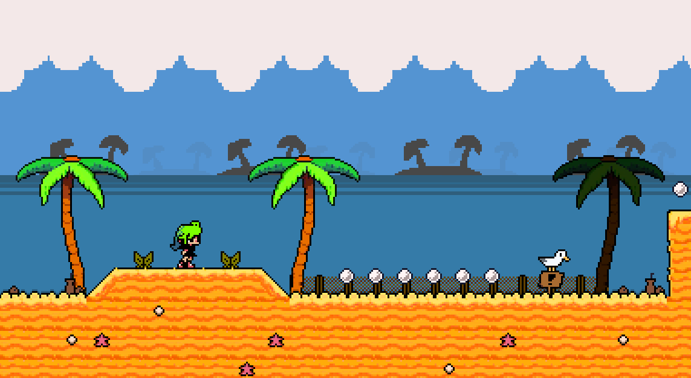
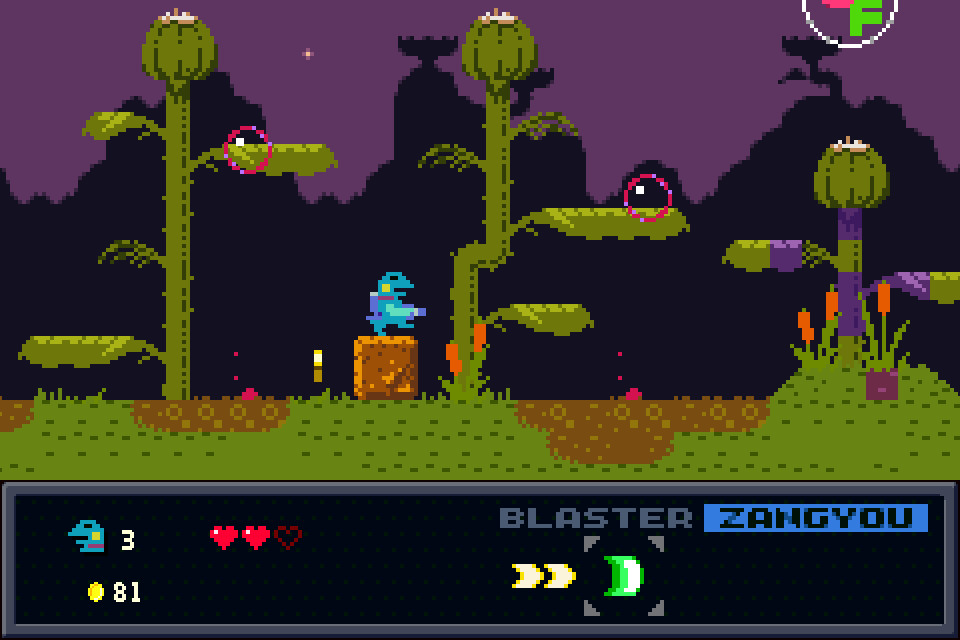
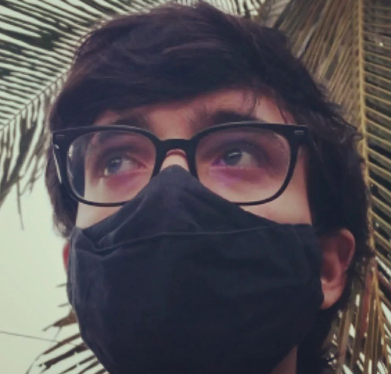

História do Jogo
Draikai é um jogo de plataforma shooter inspirado em Kero Blaster (um jogo criado pelo mesmo desenvolvedor de Cave Story). Na história, você acompanha Bianca, uma garota corajosa que embarca em uma missão para salvar seu dragão das garras de um mágico de circo louco. Esse mágico está em busca dos 'Draikais', criaturas lendárias que concedem poderes praticamente ilimitados a quem os derrotar. Bianca enfrenta essa aventura porque seu dragão foi sequestrado, tendo sido confundido com um Draikai. Determinada a resgatar seu amado companheiro, Bianca parte em uma jornada épica repleta de desafios e inimigos poderosos. Prepare-se para uma aventura cheia de emoção enquanto Bianca luta para recuperar seu dragão e enfrentar o mágico de circo maluco!
 Pessoas que Doaram
| Nome | Valor |
|---|---|
| Antonio José | R$ 20,00 |
| Rhyan Eduardo | R$ 5,00 |
| XeLa | R$ 5,00 |
| Guzou | R$ 5,00 |
| Galasio | R$ 3,00 |
| animes_offline | R$ 3,00 |
| Tiago Avila | R$ 30,00 |
| Tiago Avila | R$ 2,00 |
| Eu amo japas | R$ 1,00 |
| Rhyan Eduardo | R$ 5,00 |
| joyscifer e chaoscifer | R$ 120,00 |
| Total | R$ 204,00 |
Sobre Mim
Olá sou Breno desenvolvedor de jogos há 5 anos e youtuber, dono do canal Pinguim Bipolar. Amo jogos e o poder que eles têm de criar algo divertido.
